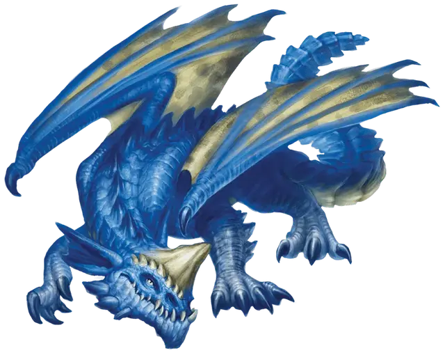

Молодой синий дракон
Young Blue Dragon
Большой Дракон, законно-злой

Класс Доспеха 18 (природный доспех)
Хиты 152 (16к10 + 64)
Скорость 40 футов, летая 80 футов, копая 20 футов
| мод | спас | ||
|---|---|---|---|
| СИЛ | 21 | +5 | +5 |
| ЛОВ | 10 | +0 | +4 |
| ТЕЛ | 19 | +4 | +8 |
| мод | спас | ||
|---|---|---|---|
| ИНТ | 14 | +2 | +2 |
| МДР | 13 | +1 | +5 |
| ХАР | 17 | +3 | +7 |
Навыки Восприятие +9, Скрытность +4
Иммунитет к урону электричество
Чувства слепое зрение 30 футов, тёмное зрение 120 футов, пассивное Восприятие 19
Языки Общий, Драконий
Опасность 9 (5000 опыта)
Бонус мастерства +4
Среда обитания Пустыня
Действия
Мультиатака. Дракон совершает три атаки: одну укусом, и две когтями.
Укус. Рукопашная атака оружием: +9 к попаданию, досягаемость 10 футов, одна цель. Попадание: Колющий урон 16 (2к10 + 5) плюс урон электричеством 5 (1к10).
Коготь. Рукопашная атака оружием: +9 к попаданию, досягаемость 5 футов, одна цель. Попадание: Рубящий урон 12 (2к6 + 5).
Электрическое дыхание (перезарядка 5–6). Дракон выдыхает молнию 60-футовой линией шириной 5 футов. Все существа в этой линии должны совершить спасбросок Ловкости Сл 16, получая урон электричеством 55 (10к10) при провале, или половину этого урона при успехе.
Опциональные правила
Драконы и врождённое колдовство. Драконы обладают врождёнными способностями к колдовству, и могут с возрастом осваивать новые заклинания при использовании этого опционального правила.
Молодые и более старые драконы могут накладывать количество заклинаний, равное их модификатору Харизмы. Каждое заклинание может быть наложено лишь один раз за день, не требуя материальных компонентов, и уровень заклинания не может превышать трети показателя опасности дракона (округляя в меньшую сторону).
Бонус к попаданию атак заклинаниями дракона равен его бонусу мастерства + его бонус Харизмы. Сл спасбросков от заклинаний дракона равна 8 + его бонус мастерства + его модификатор Харизмы. (Monster Manual)
Драконы и врождённое колдовство. Этот дракон от природы может накладывать три заклинания, 1/день каждое, и ему не требуются для этого материальные компоненты. Уровень каждого заклинания не может быть выше 3-го. Заклинание дракона, имеют Сл спасброска 15, и он имеет +7 к попаданию атаками заклинаниями.
Ниже приведен список предлагаемых заклинаний, но вы также можете выбрать заклинания, отражающие характер дракона. Дракон, который от природы накладывает заклинания друидов, ведёт себя иначе, чем тот, кто накладывает заклинания колдуна. Вы также можете дать дракону заклинания более высокого уровня, чем позволяет это правило, но такая настройка может повысить ПО дракона — особенно если эти заклинания наносят урон или накладывают состояния на цели.
• Сотворение или уничтожение воды [create or destroy water];
• Образ [major image]. (Fizban's Treasury of Dragons)
Персонализация дракона. Как уже говорилось в «Руководстве Мастера», вы можете настроить блок статистики любого дракона, чтобы отразить его уникальный характер. Незначительные изменения, такие как приведенные ниже, легко сделать, и они не влияют на ПО дракона. (Fizban's Treasury of Dragons)
Языки. Большинство драконов предпочитают говорить на Драконьем, но для общения с союзниками и приспешниками изучают Общий. Но, учитывая высокий Интеллект и продолжительный срок жизни, драконы могут легко выучить дополнительные языки. Вы можете добавить языки в блок статистики дракона.
Навыки. Большинство драконов владеют навыками Восприятие и Скрытность, а многие драконы владеют дополнительными навыками. Как и в случае с языками, вы можете изменить список навыков дракона (даже удвоить бонус мастерства), чтобы отразить его интересы и занятия. Вы также можете наделить дракона владениями инструментами, особенно если дракон проводит время в гуманоидной форме.
Заклинания. Опциональное правило «Бестиария» о том, чтобы сделать драконов с врожденным колдовством, — это простой способ добавить драконам разнообразия, не влияя на их ПО. В Главе 5 «Дракономикон» предлагаются списки заклинаний для разных видов драконов, но вы также можете выбрать заклинания, отражающие характер дракона. Дракон, который от природы накладывает заклинания друидов, ведёт себя иначе, чем тот, кто накладывает заклинания колдуна. Вы также можете дать дракону заклинания более высокого уровня, чем позволяет это правило, но такая настройка может повысить ПО дракона — особенно если эти заклинания наносят урон или накладывают состояния на цели.
Другие черты и действия. Вы можете заимствовать черты и действия у других монстров, чтобы придать дракону уникальную изюминку. Рассмотрим эти примеры:
Изменение формы. Вы можете решить, что дракон приобретает это действие в более раннем возрасте, чем обычно, особенно если вы хотите представить в своей кампании дракона в гуманоидной форме. (См. металлические драконы).
Поглощение урона. Вы можете решить, что красный или золотой дракон не только не получает урон от огня, но и исцеляется от него. (См. мясной голем [flesh golem]).
Облёт. Дракон - проворный летун, быстро вылетающий из зоны досягаемости врагов. (См. перитон [peryton]).
Подражание. Изображение персонажей или их союзников может стать забавным трюком для хитрого дракона. (См. кенку [kenku]).
Омоложение. Вы можете решить, что драконы в вашей кампании, будучи неотъемлемой частью Материального плана, почти невозможно уничтожить. Жизненная сущность дракона может храниться в яйце, из которого он появился на свет, в его кладе или в пещерном зале в центре мира, так же как сущность лича спрятана в филактерии. (См. лич [lich]).
Особые чувства. У большинства драконов есть слепое зрение и темное зрение. Вы можете улучшить зрение до истинного зрения или наделить дракона скоростью рытья или чувством вибрации. (См. зрение и свет).
Прокладывание туннеля. Эта особенность может быть присуща любому дракону, обладающему скоростью копания - он может двигаться сквозь твёрдую породу, оставляя за собой туннель. (См. бурый увалень [umber hulk]).
Описание
Тщеславные и территориальные, синие драконы парят в небесах над пустынями, охотясь на караваны, разоряя стада и поселения в плодородных землях за границами пустыни. Эти драконы также живут в сухих степях, раскалённых пустошах и на каменистых побережьях, и ревностно охраняют свои границы от возможных соперников, особенно от латунных драконов.
Синего дракона можно узнать по крупным перепончатым ушам и массивному рогу, возвышающемуся на его сплюснутой голове. Шипы рядами поднимаются от его ноздрей к бровям и густо растут на его выдающейся нижней челюсти.
Чешуя синих драконов варьируется от светло-голубого до тёмно-синего, и обычно отполирована до блеска песками пустынь. По мере старения дракона, его чешуя становится толще и крепче, и его шкура гудит и потрескивает от статического электричества. Эти эффекты усиливаются, когда дракон становится злее или вот-вот набросится, создавая запах озона в пыльном воздухе.
Тщеславные и смертоносные. Синий дракон не потерпит каких-либо замечаний или намёков на его слабость или унижающих его, получая огромное удовольствие от господства над низшими и человекоподобными созданиями.
Синий дракон — терпеливый и методичный боец. Сражаясь на своих условиях, он превращает бой в длительную дуэль, которая может затянуться на часы или даже дни, атакуя с расстояния залпами молний и улетая на значительное расстояние, лишь чтобы дождаться выгодного момента для новой атаки.
Пустынные хищники. Синие драконы плотоядны, и хотя они могут есть кактусы и другие пустынные растения, чтобы утолить свой голод, они предпочитают лакомиться стадными животными, поджаривая их с помощью своего молниевого дыхания, прежде чем проглотить их. Гастрономические предпочтения и привычки синих драконов угрожают пустынным караванам и кочевым племенам, которых драконы рассматривают как удобные наборы еды и сокровищ.
Охотясь, синие драконы закапываются в песок так, что на поверхности остаётся только рог на его голове, выглядящий торчащим из песка камнем. Когда добыча подходит достаточно близко, дракон вырывается из своего укрытия в туче песка, который лавиной разлетается от его крыльев.
Владыки и приспешники. Синие драконы стараются привлечь ценных и талантливых существ, чья служба укрепит их чувство превосходства. Барды, мудрецы, художники, волшебники и убийцы становятся ценными агентами синих драконов, которые щедро вознаграждают за верную службу.
Синий дракон держит местонахождение своего логова в тайне, и хорошо охраняет его. Даже самые верные его слуги редко допускаются туда. Он позволяет анхегам, гигантским скорпионам и другим пустынным существам обитать рядом со своим логовом для большей безопасности. Старшие синие драконы иногда привлекают к себе на службу воздушных элементалей и других существ.
Коллекционеры самоцветов. Синие драконы особенно ценят самоцветы, хотя и собирают всё, что кажется им ценным. Считая синий цвет наиболее благородным и прекрасным, они выше других камней ценят сапфиры и предпочитают ювелирные украшения и магические предметы, украшенные именно этими камнями.
Синие драконы закапывают наиболее ценные из своих сокровищ глубоко в песок, а менее ценные украшения разбрасывают на видных местах, которые на самом деле являются скрытыми ямами, чтобы покарать и уничтожить возможных воров.
См. дополнительно статью: "Бестиарий: Драконы"